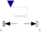
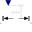
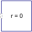

ForceForce acting between two frames, defined by 3 input signals and resolved in frame world, frame_a, frame_b or frame_resolve |

|
Diagram
{kind=link}
Information
This information is part of the Modelica Standard Library maintained by the Modelica Association.
The 3 signals of the force connector are interpreted as the x-, y- and z-coordinates of a force acting at the frame connector to which frame_b of this component is attached. Via parameter resolveInFrame it is defined, in which frame these coordinates shall be resolved:
| Types.ResolveInFrameAB. | Meaning |
|---|---|
| world | Resolve input force in world frame |
| frame_a | Resolve input force in frame_a |
| frame_b | Resolve input force in frame_b (= default) |
| frame_resolve | Resolve input force in frame_resolve (frame_resolve must be connected) |
If resolveInFrame = ResolveInFrameAB.frame_resolve, the force coordinates are with respect to the frame, that is connected to frame_resolve.
If force={100,0,0}, and for all parameters the default setting is used, then the interpretation is that a force of 100 N is acting along the positive x-axis of frame_b.
Note, the cut-torque in frame_b (frame_b.t) is always set to zero. Additionally, a force and torque acts on frame_a in such a way that the force and torque balance between frame_a and frame_b is fulfilled.
An example how to use this model is given in the following figure:

This leads to the following animation (the yellow cylinder characterizes the line between frame_a and frame_b of the Force component, i.e., the force acts with negative sign also on the opposite side of this cylinder, but for clarity this is not shown in the animation):

Parameters (2)
| animation |
Value: true Type: Boolean Description: = true, if animation shall be enabled |
|---|---|
| resolveInFrame |
Value: Modelica.Mechanics.MultiBody.Types.ResolveInFrameAB.frame_b Type: ResolveInFrameAB Description: Frame in which input force is resolved (1: world, 2: frame_a, 3: frame_b, 4: frame_resolve) |
Inputs (4)
| connectionLineDiameter |
Default Value: world.defaultArrowDiameter Type: Diameter (m) Description: Diameter of line connecting frame_a and frame_b |
|---|---|
| forceColor |
Default Value: Modelica.Mechanics.MultiBody.Types.Defaults.ForceColor Type: Color Description: Color of force arrow |
| connectionLineColor |
Default Value: Modelica.Mechanics.MultiBody.Types.Defaults.SensorColor Type: Color Description: Color of line connecting frame_a and frame_b |
| specularCoefficient |
Default Value: world.defaultSpecularCoefficient Type: SpecularCoefficient Description: Reflection of ambient light (= 0: light is completely absorbed) |
Connectors (4)
| frame_a |
Type: Frame_a Description: Coordinate system a fixed to the component with one cut-force and cut-torque |
|
|---|---|---|
| frame_b |
Type: Frame_b Description: Coordinate system b fixed to the component with one cut-force and cut-torque |
|
| frame_resolve |
Type: Frame_resolve Description: The input signals are optionally resolved in this frame |
|
| force |
Type: RealInput[3] Description: x-, y-, z-coordinates of force resolved in frame defined by resolveInFrame |
Components (5)
| world |
Type: World |
|
|---|---|---|
| forceArrow |
Type: Arrow |
|
| connectionLine |
Type: Shape |
|
|  | basicForce |
Type: BasicForce |
|  | zeroPosition |
Type: ZeroPosition |